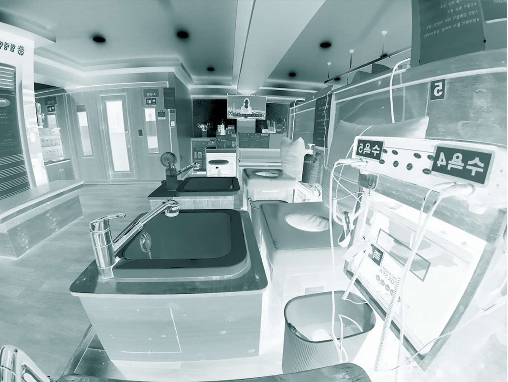

Collaborative Writing Workshop
Worldbuilding as Social Theory: A Collaborative Writing Workshop

Program introduction
This workshop explores creative writing as an open, associative tool for understanding an artistic practice as a form of worldbuilding. Through conversation, writing exercises, and examples, we will look at how artists can build an interconnected artistic ecosystem: developing recurring narratives, visual languages, collaborations, communities, and an extended artistic family around their practice.
Using a deck of storytelling and strategic prompt cards, participants will experiment with different ways to construct and communicate their own worlds, moving between personal associations, collective imagination, ecological thinking, and social narratives. Rather than searching for a fixed story, the workshop asks how a practice can become a living system that keeps growing, connecting, and generating new meanings.
- Language
- The workshop is held in English, so being able to speak and write in English is highly recommended. An AI text translation tool will be available for support.
Workshop flow
Workshop flow
Introduction — Your Practice Is Already a World
A short introduction to worldbuilding beyond fiction. We discuss how an artistic practice can contain its own materials, characters, environments, language, rituals, histories, relationships and rules. Share a few examples from artistic practices that function as complete ecosystems.
Mapping Your Existing World
Participants quickly map the elements already surrounding their practice. What materials, places, recurring images, questions, people, references, memories, technologies or non-human actors keep returning? Instead of defining their practice, they create a constellation around it.
Associative Writing — Expanding the World
A fast, intuitive writing exercise. Starting from one element of their map, participants follow associations without worrying about coherence or “good writing.” Move between fact, memory, speculation, fiction and observation. The goal is to discover unexpected connections rather than explain the work.
Storytelling Cards — Strategy & Narrative
Introduce your storytelling card deck. Each participant draws one or several cards and uses the prompts to reconsider their world: What is hidden? What creates tension? What needs repetition? Who speaks? What remains unresolved? What is the mythology behind the work? Participants develop a short piece of writing from these prompts.
From Artwork to Ecosystem
Shift from individual artworks toward the larger structure of a practice. How can exhibitions, texts, images, collaborations, online presence, research, objects and encounters all become different entrances into the same world? This is also where you can introduce the idea of “brand” differently—not as marketing, but as recognisable continuity and a coherent ecology.
Building an Artistic Family
Participants map the people and entities that could inhabit or expand their world: artists, scientists, writers, musicians, curators, local communities, fictional figures, institutions, landscapes, materials, plants, technologies, etc. Who is already part of your artistic family? Who or what is missing?
Collective Worldbuilding
In small groups, participants exchange fragments from their worlds and find unexpected connections. They create a small shared proposition: a fictional institution, ecological system, manifesto, publication, ritual, exhibition, community, or other collective structure.
Closing — One Sentence Into the Future
Everyone writes a final sentence beginning with something like: “In the world of my practice…” Each participant shares theirs with the group. The workshop ends with a collection of sentences rather than finished artist statements: small openings toward worlds that can continue developing afterwards.